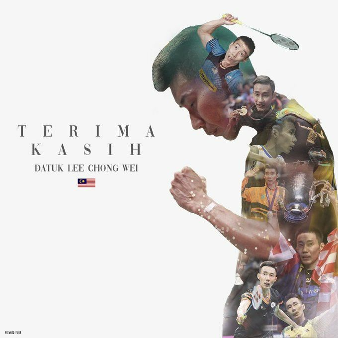
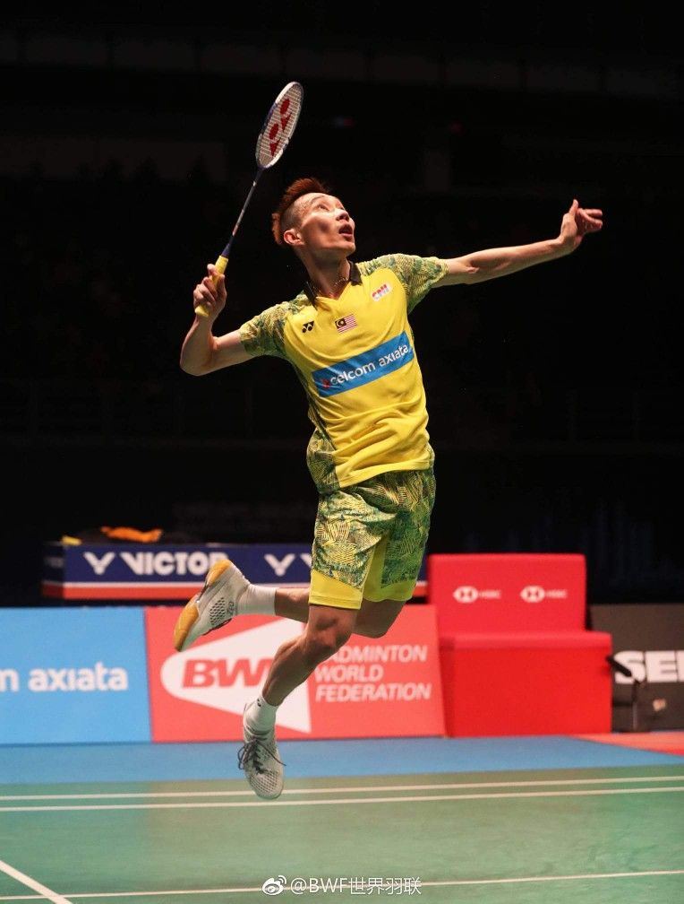

Lee Chong Wei is a famous Malaysian badminton player who was born on 21 October 1982 in Georgetown, Penang, Malaysia. He started playing badminton at a young age and became one of the greatest badminton players in the world. He was famous for his speed, agility, footwork, and powerful smashes. Lee Chong Wei won three silver medals at the Olympic Games in 2008, 2012, and 2016. He also won many international badminton tournaments and remained world number one for 349 weeks. He had a strong rivalry with Chinese badminton player Lin Dan, and their matches were exciting to watch. Lee Chong Wei represented Malaysia with great pride and inspired millions of young badminton players. In 2019, he announced his retirement from professional badminton due to health reasons. Even after retiring, he continues to inspire people through his dedication, discipline, and sportsmanship. He is remembered as a badminton legend and a national hero in Malaysia.
Lee Chong Wei is one of the most famous badminton players in the world. He was born on 21 October 1982 in Georgetown, Penang, Malaysia. He developed an interest in badminton at a young age and worked hard to become a professional player. He is well known for his speed, agility, excellent footwork, and powerful smashes. During his career, he represented Malaysia in many international competitions and brought pride to his country. He won three silver medals at the Olympic Games held in 2008, 2012, and 2016. He also won several All England Open titles and many other international tournaments.
Olympic Games: Won three silver medals in 2008, 2012 and 2016. Commonwealth Games: Won five gold medals across singles and team events. All England Open: Won the men's singles title four times — 2010, 2011, 2014 and 2017. Asian Championships: Won gold medals in 2006 and 2016. BWF World Championships: Won three silver medals in 2011, 2013 and 2015. BWF Hall of Fame: Inducted in 2023 for his outstanding contribution to badminton.
